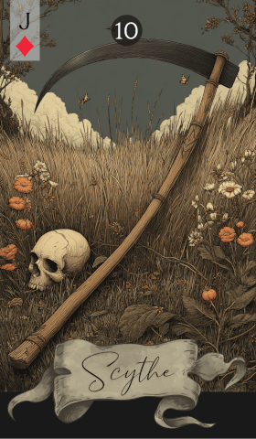

第 10 张 · 方块 J
镰刀
骤然斩断
决断
收割
切离
警示
镰刀落得快，带来骤然的结束、当下的决断，有时还有一声警告。它标记的是必须斩断或收割的时刻，而且往往容不得拖延。
免费抽牌 →
镰刀代表突然而且往往锋利的变化。它指出这样一个时刻：有什么必须被干脆地切掉——一段关系、一份工作、一个信念，或一个不再适合你的项目。作为农具，它也可以指收割，把过去所作所为的结果收进来，好的坏的都算。
这张牌常带着急迫，有时还带着危险的意味。它要你迅速行动，趁局面还没有失控就做出选择。镰刀要求清晰与准确——切开表层看见真相，把多余的去掉，然后带着明确的意图往前走。
在感情里，镰刀常常预示分手，或者一个关于关系去向的突然决定。它让情绪的局面变清楚，逼你切断牵连，或做出一个艰难的选择。它像一记提醒：你的关系是否真的于你有益，是否和你最看重的东西一致。
在职场上，镰刀可能指裁员、重组，或结束一个麻烦的项目。它也可能标记你决定离职、或与某位同事划清界限的那一刻。它虽然锋利，却也腾出了地方，让新的可能与成长得以进来。
镰刀建议你把手里的决定权用好。该切的不必躲；相反，弄清楚有什么必须结束，你才能往前走。保持警觉，主动出手——有些时候，快刀就是最好的做法。
镰刀的含义深受邻牌影响，锋芒可能更利，也可能被磨钝。以下是它与其余 35 张牌搭配时的解读：
传统图样里，镰刀是一件锋利的农具，正待挥下收割。它代表那种避不开的切割——或为收成，或为除去枯枝。它既是丰收的工具，也是终结的象征，提醒人结束与开始本是一体两面。